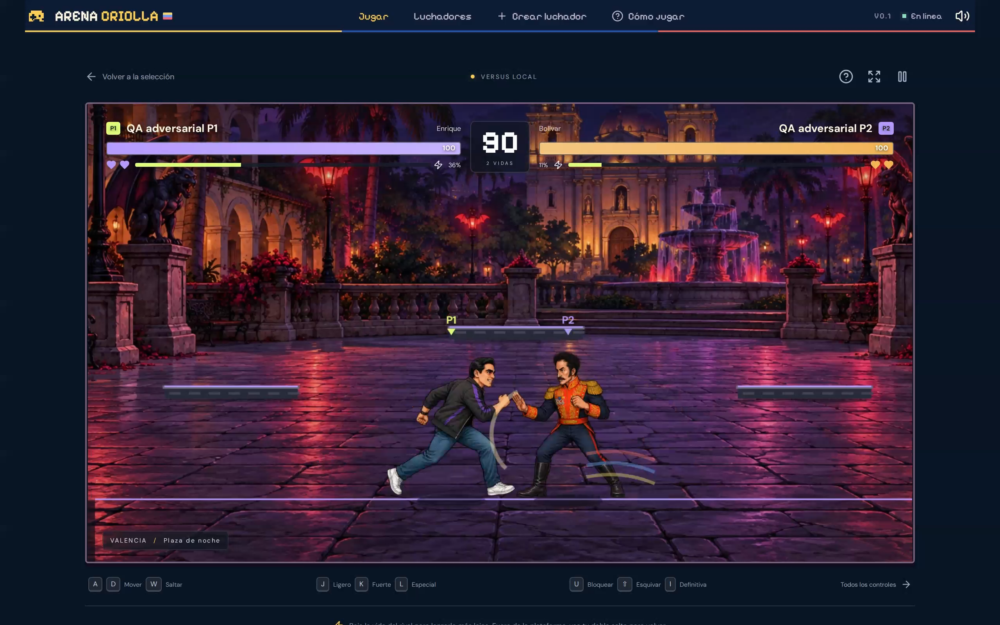

Usaba una pose fija de puñetazo durante el avance. Ahora alterna las poses de carrera y regresa a la guardia. Regresión comprobada en ambos lados.
| Personaje / rival | Escenario | Modo |
|---|---|---|
| Javiervs. Llorona · P1 | Salto Ángel | CPU · difícil✓ Verificado |
| Dayanavs. Óscar · P2 | Mérida | Local✓ Verificado |
| Nachovs. Capriles · P1 | Coro | CPU · suave✓ Verificado |
| Lorenzovs. El Diablo · P1 | Maracaibo | Local✓ Verificado |
| Carolinavs. Pedro · P1 | La Guaira | CPU · normal✓ Verificado |
| Bolívarvs. Enrique · P2 | Valencia | Local✓ Verificado |
| Édgarvs. Vicente · P1 | Los Roques | CPU · difícil✓ Verificado |
| Caprilesvs. Knoche · P1 | Altamira | Local✓ Verificado |
| Javier, Dayana y NachoDos clientes · revancha y reingreso | Poliedro | En línea✓ Verificado |
